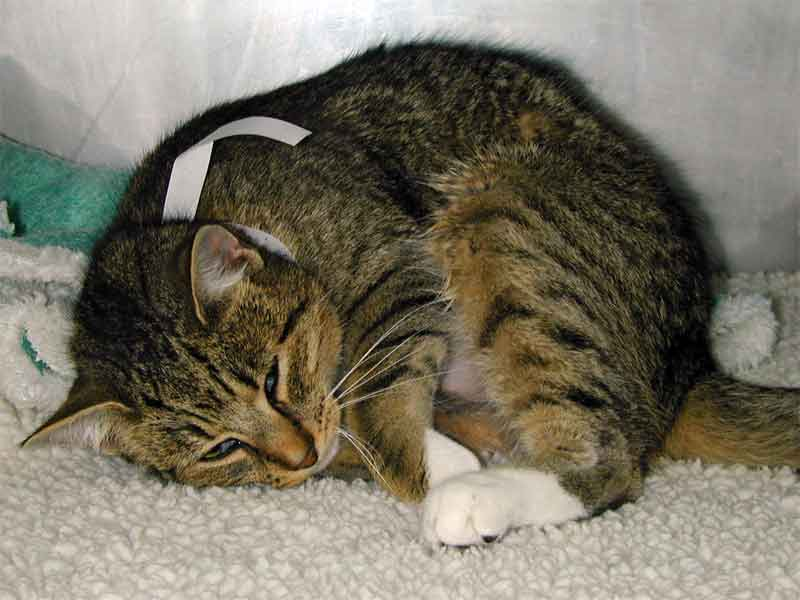

Pain assessment
In animals, it is only ever possible to measure the response to pain, usually by assessing behaviour. Beware - lots of drugs will alter behaviour without affecting pain, particularly sedatives and muscle relaxants. Some people have attempted to assess pain objectively in animals by measuring autonomic function (heart rate, blood cortisol concentrations, etc.) but this only measures stress. Pain will cause stress, but so will many other things. If there is any doubt that an animal is in pain, it should be given analgesic drugs. A response to the drugs indicates that it probably was in pain (but remember the effects on behaviour): a lack of response may mean the the animal was not in pain or that the analgesia was insufficient.
You must be able to recognise pain and know how to treat it in any species you are likely to come across.
Cat in pain from a fractured femur movie (2.6MB). This cat responded to morphine.

Cat in pain after spaying. The abdomen is held rigidly curled up to avoid stretching the peritoneum. This cat responded to morphine.
| 5 CNS index |
| |
copyright
Massey University
|